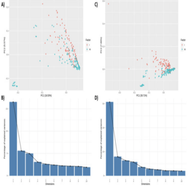
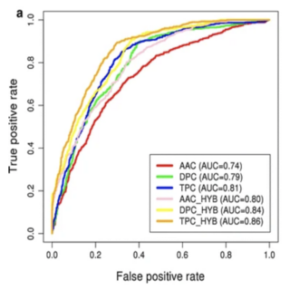
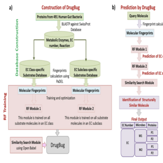
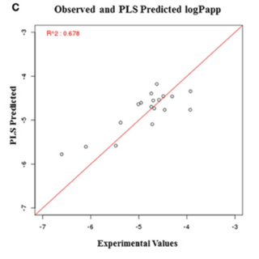
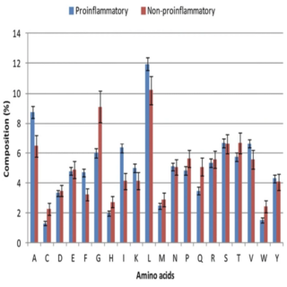
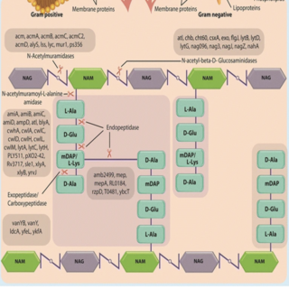
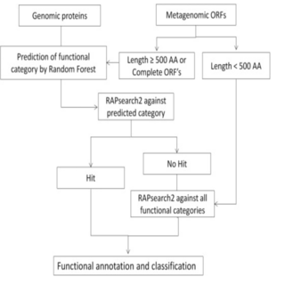

Ashok K. Sharma
Bioinformatics Scientist at Cedars-Sinai Medical Center, focusing on the analysis and integration of multi-omics, single-cell, and spatial datasets to understand disease mechanisms, particularly in Crohn's disease. My work spans host-microbiome interactions, microbial co-localization, gene regulation, and immune profiling using high-dimensional data, including imaging mass cytometry.
Previously Scientist-II, Computational Biology at Takeda Pharmaceuticals, San Diego, leveraging AI/ML for biomarker discovery and drug safety. Postdoctoral training at University of Minnesota studying microbiome-host interactions. PhD from IISER Bhopal.
Experience
Present
2022
2020
2018
2015
Publications












